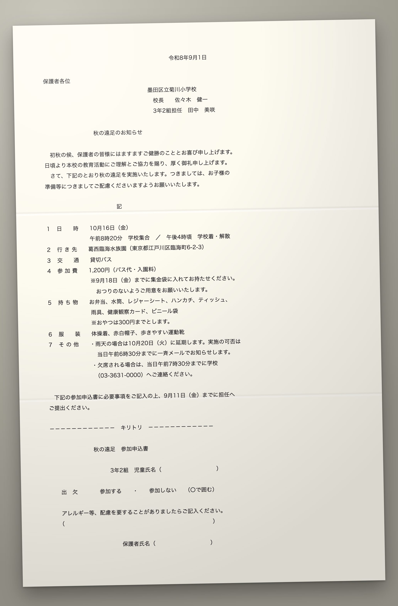

Tokyo · 2026-08-27
KAIFŪ 開封
A Japanese document arrives. Photograph it. Get back what it is, what you must do, by when — and a reply you can send, at the politeness the reader expects.
Raymond Chen · 開封 — opening a sealed envelope

What comes home in a randoseru
This arrived on a Monday.
Five dates. Two amounts. Three things a parent must do, one of them by Friday. Google Lens will render every character. It will not tell you which of the five dates is the deadline.
public/samples/school-excursion · 墨田区立菊川小学校
2
The problem in one sentence
Millions of people in Japan receive paper they can read the words of and cannot act on.
4.12Mforeign residents at end-2025. A record, first time over four million. Up 85% in ten years, 9.5% in the last year.
出入国在留管理庁 · 令和7年末在留外国人数
7,301native-language support staff (母語支援員) employed by boards of education. MEXT lists “translating documents for parents” in the job.
文部科学省 · 日本語指導が必要な児童生徒調査 令和7年度
3
What it does
Three layers, one photograph.
DECODEfreeWhat is this, what must I do, by when. School notices, ward-office and tax mail, lease clauses. One tap puts the deadline in the calendar.
JUDGEpaidThe clause beside the published 国土交通省 guidance, in your language, with the section cited. Comparison and translation. Never advice.
REPLYthe differentiatorOne intent, four registers — カジュアル · 丁寧 · 敬語 · 最敬語 — streamed together, each with one English line on what changed and who it suits.
4
Architecture
The seam: OCR never writes Japanese. Shisa never sees an image.
OpenAIVision → strict JSON
Responses API, strict structured outputs. docType · confidence · rawText · dates · amounts · obligations. No prose. No advice.
↓ rawText
Deterministic pass
Regex over the raw transcription: 令和8年9月5日, 1,200円, 金参千弐百円. Cross-checked against the model. Disagreement is shown, never resolved.
↓ confidence < 0.6 → summary only
Qdrantkaifu_groundtruth · kaifu_clauses
Clause embedded (text-embedding-3-small, vectors only) → MLIT guideline candidates. Ids only; unknown id is dropped.
image stops here · text starts here
ShisaAll Japanese generation
api.shisa.ai, Japan-hosted. Summary, JUDGE restatements, four registers and their glosses. Receives text. Never an image.
allowlist: model must start with shisa-ai/
Citation or silence
A JUDGE finding without a citation is dropped in code. differs is the strongest word the type allows.
opt-in, anonymized
Neo4jCorpus graph
Document → Obligation → ClauseType → Guideline. Categories and numbers only. Queried live: clauseStats, amountStats.
5
A wrong deadline is worse than no answer
Every date and amount is extracted twice. When the two disagree, you see both.
Sign the tear-off slip and send it back with your child.
3 Oct (Fri)令和8年10月3日（金） · 提出期限
Pay the ¥1,200 trip fee in the envelope provided.
¥1,2001,200円 · 参加費
Pack a boxed lunch, a drink and a rain jacket on the day.
Unresolved
dueDate
model saw2026-10-09
document said10月10日（金）
Obligation.conflict { field, modelSaw, documentSaid } — the UI may not pick a winner, average, or prefer either side.
6
JUDGE · citation or silence
第15条（原状回復）第2項 · 株式会社 両国不動産differs
前項の原状回復には、通常の使用に伴い生じた損耗及び経年変化（畳の日焼け、壁クロスの変色…）の回復を含むものとし、これらに要する費用は乙の負担とする。
The clause says: you pay to undo ordinary wear and ageing — sun-faded tatami, discoloured wallpaper — at move-out.
The guideline says: wear from ordinary living and the passage of time is the landlord's cost, not the tenant's.
Citation国土交通省「原状回復をめぐるトラブルとガイドライン（再改訂版）」 · 第1章 II 1 (2) 表2「原状回復の定義」 · mlit.go.jp/common/000991391.pdf
No citation → no finding. matches · differs · not_addressed is the whole vocabulary. Nothing is called illegal, void, unfair, or advised against — 弁護士法 72条 is a type constraint here, not a disclaimer.
7
REPLY · one intent, four registers
“tell the teacher my son is allergic to eggs”
カジュアルcasual
先生、お世話になってます。うちの子、卵アレルギーがあるので、遠足のお弁当は卵抜きで持たせますね。
Plain endings. A LINE message to a teacher you see at pick-up. Too light for paper.
丁寧polite · default
いつもお世話になっております。三年二組の○○の母です。息子は卵アレルギーがありますので、遠足当日のお弁当は卵を使わないものを持たせます。
です・ます throughout, class named. The safe default for anything sent to school.
敬語business keigo
息子には卵アレルギーがございますため、遠足当日の弁当は卵を除いたものを持参させていただきます。何卒よろしくお願い申し上げます。
Humble forms — ございます, 持参させていただきます. Right when it will be read by staff you haven't met, or kept on file.
最敬語formal written
拝啓 平素より格別のご高配を賜り、厚く御礼申し上げます。本児には鶏卵アレルギーがございますため… 敬具
拝啓／敬具 brackets, 所存でございます for intent. Correct on a printed reply slip; cold in a message.
Four concurrent Shisa streams. The slider selects between finished buffers; it never triggers generation. Eval 2026-08-27: 10/10 scenarios pass, 0 near-identical pairs; 丁寧→敬語 is the narrowest step and is being widened.
8
The moat · corpus graph + clause benchmark
Every opt-in decode adds a skeleton, never a document.
(:Document) {docType, ward?, issuedMonth, confidence}
-[:HAS_OBLIGATION]-> (:Obligation) {kind, amountYen?, daysUntilDue?}
-[:CONTAINS_CLAUSE {status}]-> (:ClauseType)
-[:GOVERNED_BY]-> (:Guideline) {source, section, url}
Qdrant kaifu_groundtruth — the six MLIT entries, 1536-d
Qdrant kaifu_clauses — fixture clauses tagged by topic (benchmark seed)
Neo4j — 17 seeded documents today; Early corpus label below 20
- Never storedimage · rawText · titleJa · issuer · summary · clause text · absolute dates. graph.test.ts pushes sentinel PII through and asserts none reaches Cypher.
- TodayOne neutral sentence under each finding, e.g. “Early corpus — in the KAIFŪ corpus, N of M leases contain a clause on this point; K differ from the guideline.” Served live from Neo4j in the X-Kaifu-Benchmark header.
- At 10,000 documentsHow common is this clause, how often does it differ, what does this ward usually charge — an “is this normal?” benchmark for Japanese leases, graded against MLIT's own standard lease. It does not exist yet, anywhere.
9
Market and competitors, honestly
84,759children in public schools needing Japanese language support (May 2025). 73,313 foreign nationals, that group +27% in two years. In 39% of all public schools.
文部科学省 · published 2026-05-25
371,215workplaces employ foreign staff — 2.57M workers, both records (Oct 2025).
厚生労働省 · 外国人雇用状況 令和7年10月末
- Google Lens / DeepLThe real baseline. Renders words; extracts nothing; drafts nothing.
- NaviNichi.AI · launched 10 Aug 2026Workflow platform; works because the institution is onboarded. KAIFŪ works from a photo with no relationship to anyone.
- TransHero · May 2026Scene-mode translator with polite-expression output. One register at a time; no obligations, no ground truth.
- かすたねっと (MEXT)Library of pre-translated templates a school might send. Supply side. Can't decode the paper in a parent's hand.
- GTNThe human version: 596 staff, 24 offices, 25 languages, 750,000 residents supported. Design partner, not competitor.
10
Business
Free decode → paid judge → B2B2C.
Freedecode + replyAcquisition. The school notice, the tax letter, the reply at the right register. No account, nothing stored.
PaidjudgeOne lease, one fee, at the signing moment. LegalOn sells to corporate legal departments on annual quoted contracts; nobody checks a lease on behalf of the foreign tenant.
B2B2CchannelsRent guarantors and agencies who meet foreign tenants at signing (GTN partners with ~42,000 real-estate companies). Boards of education: MEXT's きめ細かな支援事業 is ¥1.396bn for FY2026, up 21%; multilingual translation systems are a named eligible expense at a 1/3 subsidy.
11
The ask
One rent-guarantee company. One board of education. One native reviewer for the register eval.
ShisaJapanese generation · register engine
OpenAIvision · embeddings
Qdrantground-truth retrieval · benchmark
Neo4jcorpus graph
CreatorLaboHackerSquadTokyo AI
Raymond Chen · KAIFŪ 開封 · rchen.workmail@gmail.com
12